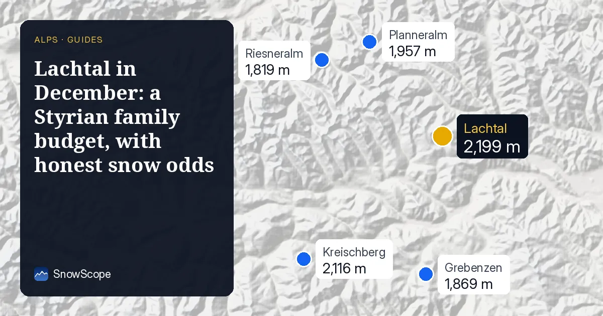

Lachtal in December: a Styrian family budget, with honest snow odds
Start with the bill: in Lachtal an adult day pass costs EUR 62 in 2026-27, and children up to 6 ski free. What you get for it in December is a small, high Styrian area where mid-mountain had 30 cm or more in the week of 15-21 December in 72 % of our 46 winters.
See the live snow forecast for Lachtal in the SnowScope appSnow depth, powder alerts and the 3D map, free.
What a December day costs here
Lachtal's official 2026-27 list gives EUR 62 for an adult day and EUR 326 for 6 days, with a lower 6-day price of EUR 293.50 in the off-peak period of the list. For a family with a child under 7 the free ticket matters more than any discount: on the official page, children born in 2021 or later ski for free.
It is a small place: 25 km of mapped runs and 10 lifts between 1572 m and 2199 m. That suits beginners and families more than skiers who want a new run every hour.


What you get for the money: snow
The base is high for this part of Austria. On a typical 15 December our history gives 30 cm at the bottom lift, 46 cm at mid-mountain (1885 m) and 58 cm at the top. In none of our 46 winters was the ground bare at the base on 15 December.
The weeks do matter. At mid-mountain the share of winters with 30 cm or more is 54 % in 1-7 December, 63 % in 8-14 December, 72 % in 15-21 December and 78 % in Christmas week. At the top the same weeks give 61, 70, 78 and 85 %.
Has December changed?
Yes, and this is the honest part. The December average at mid-mountain fell from 57 cm in the first 15 winters to 33 cm in the last 15. At the base the share of Christmas weeks with 30 cm dropped from 80 % to 40 %.
Last winter was a warning: 9 cm at mid-mountain on 15 December and 4 cm at the base. A thin year is now a real possibility here, so a booking you can move, or a short trip decided on the forecast, is wiser than a fixed week.
Turracher Höhe as plan B?
The Turracher Höhe, to the south-west, is the other Styrian-Carinthian family favourite. It is lower and thinner in December: 23 cm at mid-mountain (1792 m) on a typical 15 December and 39 % of winters with 30 cm in the week of 15-21 December. Its prices are higher too: EUR 72.50 a day and EUR 353 for 6 days in its low season, which runs until 24 December.
So Lachtal is both cheaper and snowier of the two in December. If neither has snow, the plan B is not another small hill but a higher one.
Tips for skiers
- Bring proof of age: children born in 2021 or later ski free on the official list.
- Choose the second half of December; the first week had 30 cm at mid-mountain in only about half of our winters (54 %).
- Book something you can cancel and decide a week before, with the snow map in hand.
- Leaving the piste after snowfall: read the Styria avalanche report first.
More maps (external sites)
References and credits
- Lachtal: official lift-pass prices (2026-27), checked 13 November 2026 www.lachtal.at/en/tickets-prices/day-ski-passes/
- Turracher Höhe: official lift-pass prices (2026-27), checked 13 November 2026 www.turracherhoehe.at/en/winter/tariffs
About these numbers
Snow numbers: SnowScope snow history, 46 past winters (1980-81 to 2025-26) at the resort's heights, corrected for height (an estimate for an area, not resort reports); 'good snow' = 30 cm or more on the ground as the week's average. Map: our typical depth on 15 December spread over the terrain by height. Runs and lifts: OpenSkiMap mapping. Lift-pass prices: the resorts' official price lists, checked on 13 November 2026; prices can change.
Official avalanche bulletins: Lawinenwarndienst Steiermark
Cite this report
For research, teaching or the press: the numbers and charts are free to reuse under CC BY 4.0 with this citation.
SnowScope (2026), Lachtal in December: a Styrian family budget, with honest snow odds, https://snowscope.app/blog/en/2026/11/lachtal-december-ski-styria-budget-snow.html, accessed 2026-11-14
SnowScope (Atlas Labs). (2026, November 14). Lachtal in December: a Styrian family budget, with honest snow odds. SnowScope snow reports. https://snowscope.app/blog/en/2026/11/lachtal-december-ski-styria-budget-snow.html
BibTeX
@misc{snowscope2026lachtaldecemberskistyria,
author = {{SnowScope (Atlas Labs)}},
title = {Lachtal in December: a Styrian family budget, with honest snow odds},
year = {2026},
month = nov,
howpublished = {\url{https://snowscope.app/blog/en/2026/11/lachtal-december-ski-styria-budget-snow.html}},
note = {Published 2026-11-14 17:24 UTC; accessed 2026-11-14}
}· CC BY 4.0 · Methods, data and tools →
Lachtal: snow and temperature by height, this winter vs last (tools) →
Follow Lachtal
Free: a message when fresh snow is coming, and the forecast every morning.
More snow reports

Artesina holds the deepest snow in the Alps this weekend with 22 cm upper slopes. Week 10 sees the best conditions historically. Data from 5 November.

Ten European ski resorts ranked for December value, led by Les 2 Alpes with 75 cm of mid-mountain snow.

Compare December snow odds and checked lift pass prices starting at 40.00 EUR across Italian ski areas for your weekend drive.